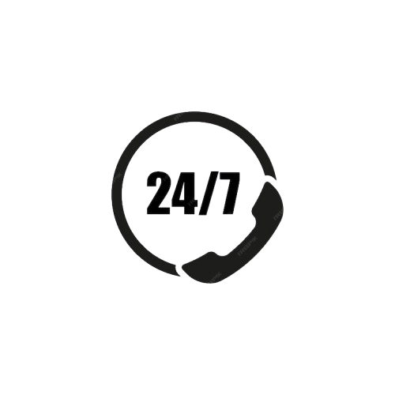
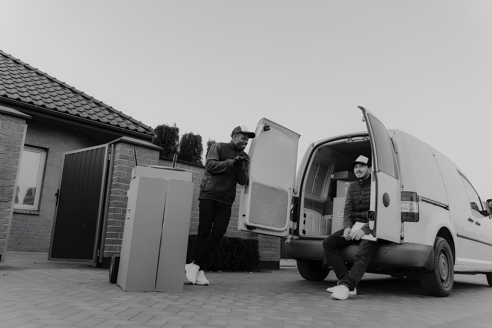

Jalur darat dan udara
Rute pengiriman disesuaikan dengan tujuan dan layanan yang dipilih, dari antarkota sampai antarprovinsi.
Periksa cakupan layananPengiriman tanpa tebak-tebakan
Setiap perpindahan paket dicatat di gudang asal, gudang transit, sampai alamat tujuan. Satu nomor resi, satu status yang bisa dibaca siapa saja.
Selama perjalanan
Status paket berpindah setiap kali petugas gudang memperbarui posisinya. Yang muncul di halaman pelacakan adalah catatan terakhir yang benar-benar tersimpan di sistem.
Layanan terpilih
Bukan daftar fitur panjang, hanya janji yang benar-benar dijalankan dalam alur kerja kami.
Rute pengiriman disesuaikan dengan tujuan dan layanan yang dipilih, dari antarkota sampai antarprovinsi.
Periksa cakupan layananPilihan pembayaran tunai maupun non-tunai tersedia saat data pengiriman dicatat petugas.
Hitung estimasi biaya
Kalau perjalanan paket tidak sesuai rencana, tim layanan pelanggan bisa dihubungi setiap saat.
Cara mengajukan komplain
Cara kami bekerja
Perpindahan paket tidak berhenti di meja operasional. Status yang diinput staf gudang langsung terlihat oleh siapa pun yang memegang nomor resi, tanpa perlu menelepon untuk bertanya.
Alur staf sendiri dibatasi login dan hak akses, sehingga data pengiriman hanya bisa diubah oleh petugas yang berwenang.
Siap mengirim?
Halaman pelacakan menampilkan status terbaru, gudang terakhir, dan seluruh riwayat perjalanan paket Anda.